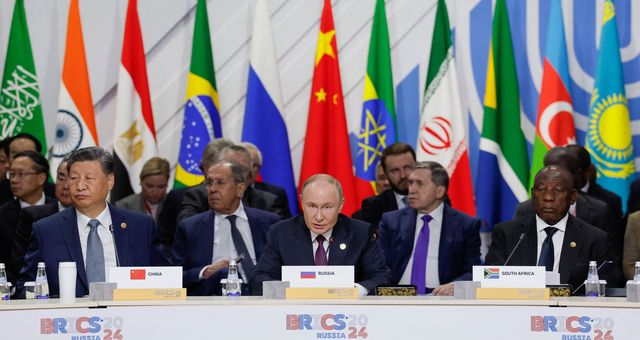

Presentation
Le groupe BRICS+ vise à promouvoir un monde multipolaire, où les décisions économiques et politiques ne sont pas dominées par une seule puissance.
Ses principaux objectifs sont :
- ⚖️ Renforcer la coopération économique entre les pays émergents.
- 🏦 Réformer les institutions financières mondiales (FMI, Banque mondiale) pour une meilleure représentation du Sud.
- 💡 Encourager le développement durable et l’innovation technologique.
- 🌍 Promouvoir la paix, la sécurité et le respect de la souveraineté des États.

Le BRICS+ cherche à bâtir un système mondial plus équitable, reposant sur la coopération, la solidarité et la croissance partagée.
Avis des internautes
👍 Avis positifs
| Nom | Commentaire |
|---|---|
| Leila | Le BRICS ouvre la voie à un nouvel équilibre mondial plus juste. |
| David | Un excellent moyen de renforcer les pays du Sud face aux puissances occidentales. |
👎 Avis négatifs
| Nom | Commentaire |
|---|---|
| Paul | Beaucoup d’intentions, mais peu de résultats concrets jusqu’à présent. |
| Sofia | Les objectifs sont trop ambitieux et manquent de coordination entre membres. |